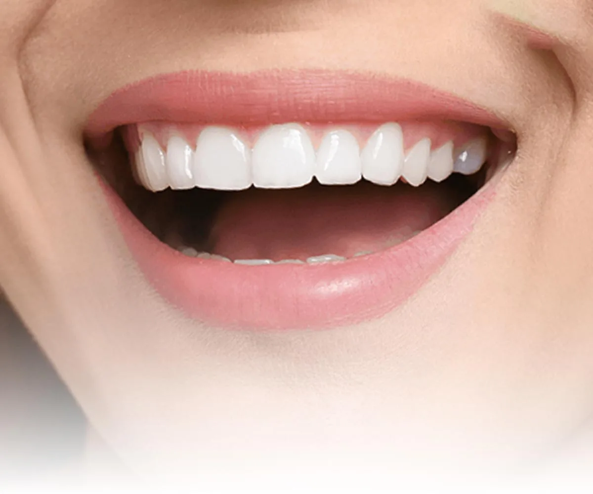

Zâmbet Hollywoodian în Turcia
Un zâmbet hollywoodian, caracterizat prin albul său uluitor, alinierea simetrică și aspectul natural, a devenit simbolul perfecțiunii dentare. În timp ce termenul „zâmbet hollywoodian” este adesea folosit în mod univoc cu „modificarea zâmbetului”, există distincții subtile între cele două.
Ce este un zâmbet Hollywoodian?
Un zâmbet hollywoodian este o procedură stomatologică meticuloasă care combină tehnici de stomatologie cosmetică, cum ar fi fațetele, coroanele, albirea dinților și ortodonția, pentru a obține un zâmbet impecabil. Scopul este de a crea un zâmbet plăcut din punct de vedere estetic, dar și funcțional și sănătos.
Design-ul zâmbetului hollywoodian: obțineți zâmbetul perfect
Design-ul zâmbetului hollywoodian reprezintă obținerea unui zâmbet plin de farmec și perfecțiune. Acest tratament cuprinzător implică albirea, remodelarea, îndreptarea dinților și aplicarea fațetelor.
Dar design-ul zâmbetului hollywoodian înseamnă doar îmbunătățirea aspectului dinților?
În timp ce latura estetică joacă un rol semnificativ, procesul se concentrează, de asemenea, pe îmbunătățirea sănătății bucale și a funcționalității. Prin urmare, un design al danturii bine executat implică luarea în considerare a sănătății gingiilor, a alinierii dinților și a funcționalității mușcăturii.
Poate oricine opta pentru design-ul zâmbetului hollywoodian?
Răspunsul depinde de cazurile individuale. Majoritatea adulților cu sănătate generală și orală bună sunt eligibili pentru design-ul zâmbetului hollywoodian. Cu toate acestea, este întotdeauna esențial să vă consultați mai întâi cu un medic stomatologic.
Cum se obține zâmbetul hollywoodian?
Procedurile implicate în obținerea unui zâmbet hollywoodian variază în funcție de nevoile dentare ale individului și de rezultatul dorit. Cu toate acestea, unele tehnici comune includ:
Fațete
Acestea sunt fațete lipite de suprafața frontală a dinților, pentru a elimina defectele estetice precum fisurile, golurile și alinierea greșită sau cavitățile dentare congenitale produse la nivelul dinților din diverse motive.
Coroane
Restaurări care acoperă și protejează dinții deteriorați sau deformați. Coroanele pot fi realizate din diverse materiale, inclusiv porțelan, metal sau ambele.
Albirea dinților
Tratamente profesionale de albire, care pot elimina petele profunde și decolorarea, oferind dinți mai strălucitori și mai albi.
Aparat dentar sau gutiere transparente
Poate fi folosit pentru a îndrepta dinții strâmbi sau nealiniați, creând un zâmbet mai simetric și mai estetic.
Implant dentar
Implanturile dentare sunt șuruburi din titan plasate în locul dinților lipsă, imitând rădăcinile naturale ale dintelui. Ca parte a zâmbetului hollywoodian, implanturile dentare pot fi folosite pentru a inlocui dinții lipsă. Implanturile dentare îndeplinesc o funcție de mestecat asemănătoare cu a dinților naturali, iar din punct de vedere estetic pot fi obținute rezultate foarte bune.
Zâmbetul gingival
Zâmbetul gingival este o afecțiune în care gingiile sunt expuse excesiv atunci când pacientul zâmbește. Zâmbetul gingival este o afecțiune care afectează negativ estetica zâmbetului. În tratamentul zâmbetului gingival, ca o parte a zâmbetului hollywoodian, pot fi aplicate diverse metode. Aceste metode includ grefarea gingiei, estetica gingiilor cu laser și tratamentul ortodontic.
Cât rezistă un zâmbet hollywoodian?
Longevitatea unui zâmbet hollywoodian depinde de obiceiurile de igienă orală ale pacientului, de stilul său de viață și de materialele dentare specifice utilizate. Cu o îngrijire adecvată, fațetele și coroanele pot rezista între 10 și 15 ani, în timp ce rezultatele albirii dinților pot dura de la câteva luni până la un an. Tratamentul ortodontic durează de obicei câteva luni până la câțiva ani, dar rezultatele sunt, în general, permanente.
Tipurile de zâmbet hollywoodian
Există multe tipuri de fațete: fațete de portelan, fațete compozite, fațete palatine si lumineers. Detalii despre aceste tipuri sunt expuse mai jos;
Fațete de porțelan
Materialul fațetelor este porțelanul. Fațetele se potrivesc cu culoarea dinților și se mențin până la 10 - 15 ani. Este mai rezistent la pătare decât alte materiale. Este personalizat. Fațetele de porțelan implică un risc minim și sunt tipul de fațete cu cel mai natural aspect. Sunt puțin mai scumpe decât alte fațete.
Fațete compozite
Fatetele compozite, care sunt văzute ca o alternativa la fațetele de portelan, sunt mai ieftine si mai rapide. Fațetele se mențin până la 5 - 7 ani. Fațetele compozite sunt montate într-o zi. Fațetele compozite se pun pe smalțul dintelui sau pe dintele modelat. Unul dintre avantajele lor este că zona deteriorată poate fi corectată.
Acoperiri palatale (onlay-uri)
Fațetele palatine repara părțile deteriorate ale dinților fără a necesita intervenții suplimentare Acest tip de fațete, cunoscut și sub numele de onlay, este folosit pentru repararea dinților din față și din spate. Este o fațetă regională.
Lumineers
Lumineers sunt mai durabile decât alte fațete. Aceste fatete, care pot rezista până la 20 de ani, au un aspect translucid. Fațetele sunt foarte subțiri. Cu acest tip de fațete nu este nevoie să remodelați dinții. Lumineers sunt foarte aproape de culoarea naturală a smalțului dentar, dar datorită grosimii lor, sunt mai fragili decât alte fatete.
Cost zâmbet hollywoodian: Turcia vs. Marea Britanie
Costul unui zâmbet hollywoodian poate varia semnificativ în funcție de locație, de expertiza stomatologului și de complexitatea tratamentului. În general, Turcia este considerată o opțiune mai accesibilă pentru procedurile stomatologice, inclusiv pentru refacerea zâmbetului hollywoodian. Acest lucru se datorează mai multor factori, cum ar fi costurile mai mici legate de forța de muncă, cheltuielile generale mai mici și o piață competitivă între clinicile dentare.
Iată o comparație aproximativă a costului mediu al unui zâmbet hollywoodian în Turcia și Marea Britanie:
Turcia: 2.500 € până la 4.800 €
Marea Britanie: 6.000 £ până la 10.000 £
Zâmbetul hollywoodian în Turcia: întrebări frecvente
Cât costă un zâmbet hollywoodian în Turcia?
Costul zâmbetului hollywoodian în Turcia variază între 2.500 € și 4.800 €. Acesta este semnificativ mai mic decât în Marea Britanie, unde costul variază de regulă între 6.000 și 10.000 de lire sterline.
Care este cea mai bună vârstă pentru refacerea danturii?
Cea mai bună vârstă pentru refacerea danturii este atunci când oasele feței individului s-au dezvoltat complet, de obicei în jurul vârstei de 18 ani. Cu toate acestea, unele persoane pot opta pentru proceduri cosmetice minore înainte de această vârstă.
Cine necesită refacerea danturii?
Oricine este preocupat de zâmbetul său și își dorește un aspect mai plăcut din punct de vedere estetic, dar și mai funcțional poate lua în considerare o refacere a danturii.
De ce fațetele în Turcia sunt atât de ieftine?
Costul scăzut al fațetelor și al altor proceduri stomatologice în Turcia se datorează costurilor reduse ale forței de muncă, cheltuielilor generale reduse și concurenței dintre clinicile dentare. Totuși, motivul principal este promovarea turismului medical de către minister și cursul de schimb.
Care este cea mai ieftină țară pentru refacerea danturii?
Turcia este, în general, considerată una dintre cele mai accesibile destinații pentru refacerea danturii și alte proceduri stomatologice. Cu toate acestea, este esențial să vă informați și să comparați opțiunile cu atenție, pentru a asigura calitatea și siguranța.
Este mai bine să obțineți fațete în Marea Britanie sau Turcia?
Decizia de a obține fațete în Marea Britanie sau Turcia depinde de preferințele individuale, bugetul și opțiunile de călătorie. În timp ce Turcia oferă costuri mai mici, Marea Britanie poate oferi condiții de comunicare și un sistem de sănătate mai familiar.
Dantura hollywoodiană este demontabilă?
Nu, tratamentele de zâmbet hollywoodian, cum ar fi fațetele și coroanele, sunt aplicații permanente, care nu pot fi îndepărtate.
Este zâmbetul hollywoodian sănătos?
Tratamentele de zâmbet hollywoodian pot îmbunătăți în mod semnificativ sănătatea orală abordând problemele dentare subiacente, cum ar fi cariile dentare, alinierea greșită și spațiile.
Aveți nevoie de aparat dentar înainte de zâmbetul hollywoodian?
Nu neapărat. Nevoia de aparat dentar este individuală
Zâmbetul hollywoodian provoacă respirație neplăcută?
Nu. Zâmbetul hollywoodian nu provoacă respirație urât mirositoare. Mirosul este de obicei cauzat de fumat și consumul de alcool. În plus, poate fi un simptom al diverselor boli.
Zâmbetul hollywoodian și fațetele reprezintă același lucru?
Zâmbetul hollywoodian include o varietate de proceduri menite să corectze toate problemele estetice legate de zâmbet. Fațeta este o procedură frecvent utilizată în procedura Zâmbetul hollywoodian, dar nu este același lucru.
Zâmbetul hollywoodian poate cădea?
Fațetele sunt o aplicație care necesită îngrijire delicată, durata de viață a acestora fiind în general de 5 până la 10 ani. Cu toate acestea, fațetele pot cădea din anumite motive. Aceste motive sunt;
- Adeziv slab
- Vârsta fațetelor
- Scrâșnirea dinților
- Înggrijire precară
- Cariile dentare
- Consumarea alimentelor foarte dure